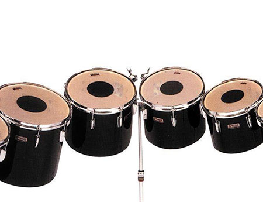

- Description
Ton-tom drums are drums with no snare cables, named using the Anglo-Indian and Sinhala languages. Most toms ranges from 6in to 20in in diameter, but floor toms are an exception that go as far as 24in. The CT-9000 Series Yamaha tom-toms are a perfect choice for a classical concert use, or for any performance perhaps. With proportional sizing, oak shells and the YES III Mount System, it gives this music the balance and an extraordinary range of expressivity.
- Specifications
Name: CT-9000 Series Diameter: 6in - 16in Finish: Oak Head Batter: Yamaha Remo Coated Ambassador Head Bottom: Yamaha Remo CLear Ambassador Shell Thickness: 6-ply Shell Material: Oak Accessories: Tuning Key Pricing: RM350 per month per drum - Pricing Explanation
As this includes the whole set, the pricing is set as RM350 per month, with the drums priced at RM4500 on average. The smaller toms are included when you rent the bigger ones, so by renting a drum, you'll have an extra 4 more for all your concert needs.
- Disclaimer
When in possession of the instrument, the user holds full responsibility for what happens to the instrument. If the instrument rented is in anyway damaged, the customer will have to replace said instrument for the rental service. Late returners of the instrument would be issued a warning in a week, and will be subjegated to a RM150 late fee. For every subsequent week, another RM150 would be added.